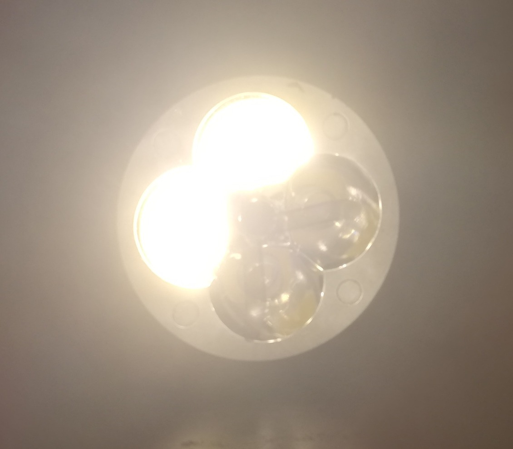

The LED bulbs finally arrived. Before the other parts get here, I set out to test them. I hooked each LED up to some random old 12V PSU for testing. Let's see what they can do.
Aside from one which seems to have two faulty led modules, they seem to be working well. Now I decided to hook the LED up to a variable DC to DC buck converter and see whether it works at lower voltages - I believe that this is a good test to see whether they are actually dimmable.
Fast-forward a few months and an epidemic to when half of the parts had arrived but another half were lost in the mail. A friend kindly lent me his box of electronics/arduino gear so that this project can go on. (Thanks George!) So I was finally ready for a proof-of concept.
For the proof-of-concept I wanted to make one bulb turn on at 8AM. I used the same old 12V PSU, hooked up two variable DC-DC converters (one for powering the arduino @ 5V, the other for the LED @ 8V), plopped the DS3231 clock module and MOSFET module on a breadboard and wired all of it up to the borrowed arduino leonardo. I also added a green LED which was set to pulse every 500ms so that I know the loop is still working (I wasn't very trusting of the arduino at this point). Here it is in all it's janky glory:
And... it worked! I'm really amazed at how simple this was to hook up. All I needed was a bit of googling to figure out how to get the DS3231 chooching along and that turned out to be a breeze thanks to adafruit's RTCLib. A slight issue arose - the RTC module takes a CR2032 battery to keep time while it is not powered externally and of course I didn't have any spares... So I decided to sacrifice my car key battery for it. (update: took me like a month to buy the batteries, but it was totally worth)
There was one more thing I had to validate before I could move on from the proof-of-concept stage - the relays. I'm set on using a relay to turn the main 12V PSU on or off in the final project. For now to verify that it works (and to learn how to use it) I swapped in an old laptop charger and attached the relay to it and it up to the P-O-C. Here it is on my bedside table.
Hooking up the relay took way more time than expected as it just didn't seem to work... It took me about a half an hour to realise that the relay expects a LOW signal to close the circuit. I'd been sending HIGH because... well... that just made sense in my mind. Reminder for self - RTFM :)
Next part: Making it useful Previous part: Components